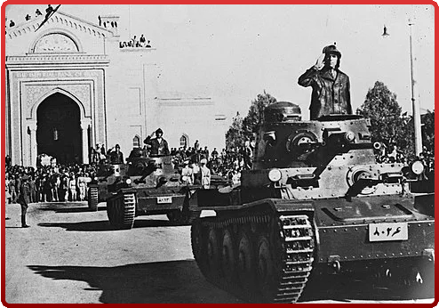

ВЯЧЕСЛАВ МОЛОТОВ
ВЯЧЕСЛАВ МОЛОТОВ ИОСИФ СТАЛИН
ИОСИФ СТАЛИН ГАРРИ ТРУМЭН
ГАРРИ ТРУМЭН
ИРАНСКИЙ КРИЗИС
Согласно 5-й статье тройственного договора между СССР, Великобританией и Ираном, вывод всех союзных войск, не имевших оккупационного статуса, должен был состояться не позднее шести месяцев после окончания всех военных действий между союзными державами и державами «Оси». Но уже 19 мая 1945 г. Мохаммед Реза Пехлеви обратился к правительствам Великобритании, СССР и США с предложением о досрочном выводе их войск, мотивируя свою просьбу окончанием войны с Германией. Озабоченные перспективой закрепления Советского Союза на территории Северного Ирана, вчерашние союзники решили поддержать позицию официального Тегерана и через своих послов в Москве направили в НКИД СССР письма с предложением договориться о досрочном выводе союзных войск с территории «дружественной страны». Однако НКИД СССР хранил гробовое молчание, в том числе и потому, что в конце мая 1945 г. тогдашний заместитель наркома иностранных дел Сергей Иванович Кавтарадзе, по должности курировавший весь Ближневосточный регион, в своей докладной записке на имя В. М. Молотова прямо указал, что «вывод советских войск из Ирана поведёт, несомненно, к усилению в стране реакции и неизбежному разгрому демократических организаций», а «реакционные и проанглийские элементы приложат все усилия и пустят в ход все средства, чтобы ликвидировать наше влияние и результаты нашей работы в Иране». Лишь в июле 1945 г. на Потсдамской конференции английской делегации удалось привлечь внимание высшего советского руководства к своему плану трёхступенчатого вывода союзных войск. Однако в ходе состоявшихся переговоров между И. В. Сталиным, Г. Трумэном и К. Эттли была достигнута устная договорённость только в отношении самого Тегерана, но дальнейшее решение вопроса было отложено до заседания Совета министров иностранных дел (СМИД), намеченного на сентябрь того же года в Лондоне. Между тем в самом Иране, на территории компактного проживания двух этнических меньшинств — иранских курдов и азербайджанцев — начался заметный рост «сепаратистских» настроений, окрашенный в цвета национально-революционного движения. Уже в августе 1945 г. в Северном Иране (Иранском Азербайджане) начались массовые беспорядки, которые были спровоцированы подстрекательской политикой нового правительства, по приказу которого стягивались в Тебриз жандармские части и правительственные войска. К началу сентября все беспорядки в городе и ближайшей округе были подавлены, а их организатор — Народная партия Ирана (Туде) разгромлена. Но уже в середине ноября 1945 г. военные формирования новой Демократической партии Ирана подняли вооружённое восстание, выдвинув в качестве главного требования предоставление Иранскому Азербайджану автономии в составе Ирана. Буквально на следующий день очередное иранское правительство направило в мятежный регион Тебризскую дивизию, однако части 15-го кавалерийского корпуса генерал-лейтенанта М. И. Глинского не пропустили её в Тебриз и блокировали в Казвине. Естественно, что в результате всех этих событий советско-иранские отношения резко обострились. Последовал обмен жёсткими дипломатическими нотами, в одной из которых Москва прямо дала понять, что любая переброска Тегераном новых войск в район возникшего конфликта лишь усилит беспорядки и «может привести к кровопролитию». Естественно, подобное развитие событий «вынудит советское правительство ввести в Иран» новые армейские части «для охраны государства и обеспечения безопасности своих границ». Однако до прямого столкновения дело не дошло. И наступила развязка. В конце марта 1946 г. на встрече с премьер-министром Ахмадом Кавамом, вновь вернувшимся во власть, новый советский посол Иван Васильевич Садчиков проинформировал его о том, что в обусловленный срок все советские войска будут выведены с территории Ирана. В начале мая 1946 г. эвакуация советских войск с территории Ирана была полностью завершена. Однако вопрос о судьбе национально-автономных образований в Иранском Азербайджане и Иранском Курдистане оставался открытым. Воспользовавшись выводом советских войск, правительство Ахмада Кавама под предлогом подготовки парламентских выборов приступило к ликвидации автономий. В декабре 1946 г. иранские войска вступили в Тебриз и Мехабад. Национальные правительства пали, их лидеры были казнены или бежали за границу.